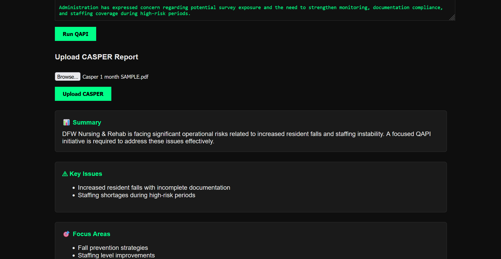

CASPER & Facility Intelligence
Resources for translating facility performance signals into QAPI priorities, survey readiness, and operational follow-through.
CASPER as an Administrator Tool
Many administrators begin QAPI preparation by reviewing CASPER reports. CASPER is not simply a report repository. It is an operational intelligence tool that helps facilities identify trends, monitor performance, and prioritize improvement efforts.
CASPER provides information. QAPI provides action. The administrator's job is to connect the two: review the reports, identify the risk, determine why the trend is occurring, and make sure the facility has a practical plan to address it.
What CASPER Provides
CASPER consolidates information already reported to CMS and related reporting systems. Administrators use it to understand where the facility is performing well, where it is drifting, and where survey risk may be building.
Common review areas include:
- Facility Quality Measures
- Five-Star performance
- Long-stay measures
- Short-stay measures
- Survey history
- Deficiency history
- Rehospitalization trends
- Antipsychotic measures
- Pressure injury measures
- Infection-related indicators
Medicare Care Compare
Many administrators review Medicare Care Compare alongside CASPER because it shows how facility performance appears publicly. CASPER may be where leadership studies the detail, but Care Compare is where Five-Star ratings, health inspections, staffing, Quality Measures, public survey history, and facility comparisons are visible in a more public-facing format.
For an administrator, the point is not cosmetic. Care Compare helps leadership understand how survey history, staffing data, and quality measures may be interpreted outside the building. If Care Compare shows movement in the wrong direction, the facility should understand why and decide whether the issue belongs in QAPI, survey readiness, department monitoring, or leadership follow-up.
What Administrators Review
A useful CASPER review is not just reading numbers off a report. Administrators look at Quality Measures, Five-Star trends, long-stay metrics, short-stay metrics, repeat deficiencies, and survey history to see whether performance is improving, declining, or staying unchanged.
The trend direction matters. A measure that is still acceptable but moving the wrong way may deserve attention before it becomes a survey issue. A repeat deficiency may show that the facility corrected the immediate problem but did not fix the process. A short-stay measure may point to discharge, therapy, nursing, or hospital-transfer patterns that need a closer look.
In practice, the administrator is usually looking for priorities, not explanations from the report alone. If a measure changed, the next step is to compare it against what the building already knows: recent incidents, department audits, staffing changes, resident acuity, MDS coding patterns, infection logs, hospitalization reviews, and prior survey findings.
Common Warning Signs
Facilities should not wait for survey findings before addressing known risks. Common warning signs include:
- Falls trending upward
- Rehospitalizations increasing
- Infection rates increasing
- Antipsychotic use increasing
- Weight loss concerns
- Documentation issues
- Repeat survey findings
- Staffing instability
A warning sign does not automatically mean the facility has failed. It means leadership should ask better questions before the issue grows. Is the problem isolated to one unit? Is it tied to one shift? Did the measure change after a census change, staffing change, or process change? Is the same concern showing up in grievances, incident investigations, and audits?
From CASPER to QAPI
CASPER identifies signals. QAPI creates action plans. Monitoring evaluates results. A practical workflow looks like this:
- CASPER: Review reports, measures, survey history, and facility trends.
- Identify Risk: Decide which trends or measures need leadership attention.
- Root Cause Analysis: Determine why the issue is occurring instead of assuming the first explanation is correct.
- QAPI Initiative: Assign ownership, define the goal, and identify what will be measured.
- Monitoring: Track whether the intervention is working through audits, observations, reviews, or follow-up data.
- Closure: Document the outcome, close the initiative when appropriate, or extend it with a clear reason.
Facility Intelligence
Facility intelligence is broader than CASPER. CASPER is one important source, but administrators also need Medicare Care Compare information, survey findings, incident investigations, Quality Measures, staffing observations, infection prevention data, resident concerns, and operational audits.
The goal is creating a complete picture of facility performance. A single report rarely tells the whole story. When CASPER data, investigation findings, audit results, and department observations point in the same direction, leadership has a stronger basis for action.
This is where QAPI becomes useful. A facility can use CASPER to identify a signal, but it needs facility intelligence to understand whether the signal reflects a real operational issue. The best administrators do not treat CASPER as a quarterly surprise. They use it as part of a routine review cycle, alongside the day-to-day information coming from the floor.
Strong leaders compare multiple sources before reaching conclusions. A fall trend may show up in CASPER, but the cause may be clearer in fall investigations, care plan audits, therapy notes, staffing observations, and unit-level monitoring. An infection concern may appear in quality data, but the operational explanation may be in isolation audits, supply availability, staff competency checks, and infection prevention rounds.
Example Workflow
CASPER shows increased falls. The Administrator and DON review fall reports, care plans, investigation findings, staffing patterns, and recent monitoring. The review shows that interventions were identified after falls, but follow-through was inconsistent across shifts.
The facility completes root cause analysis and identifies inconsistent intervention communication as the main issue. A QAPI initiative is opened. The team updates the handoff process, re-educates nurses and CNAs, assigns monitoring to nursing leadership, and reviews results for 60 days. If falls decrease and intervention follow-through improves, the initiative is documented and closed. If results do not improve, leadership documents the barrier and adjusts the plan.
Common Mistakes
- Reviewing reports without taking action
- Tracking too many priorities at once
- Ignoring trend direction
- Treating data sources separately
- Failing to connect investigations to QAPI
- Failing to close initiatives
One of the most common mistakes is discussing falls, infections, deficiencies, staffing concerns, and CASPER data separately instead of evaluating whether they reflect the same operational problem. That approach makes it easy to miss patterns. A stronger process brings related signals together and asks whether they point to the same underlying issue.
How Maven Helps
Maven helps organize facility intelligence into action. CASPER review, Medicare Care Compare context, investigation findings, QAPI prioritization, trend identification, deficiency tracking, and monitoring workflows all belong in the same operational picture. Maven helps leaders connect those signals so the facility can decide what needs action, who owns it, how it will be monitored, and when it can be closed.
See how Maven organizes facility intelligence →
